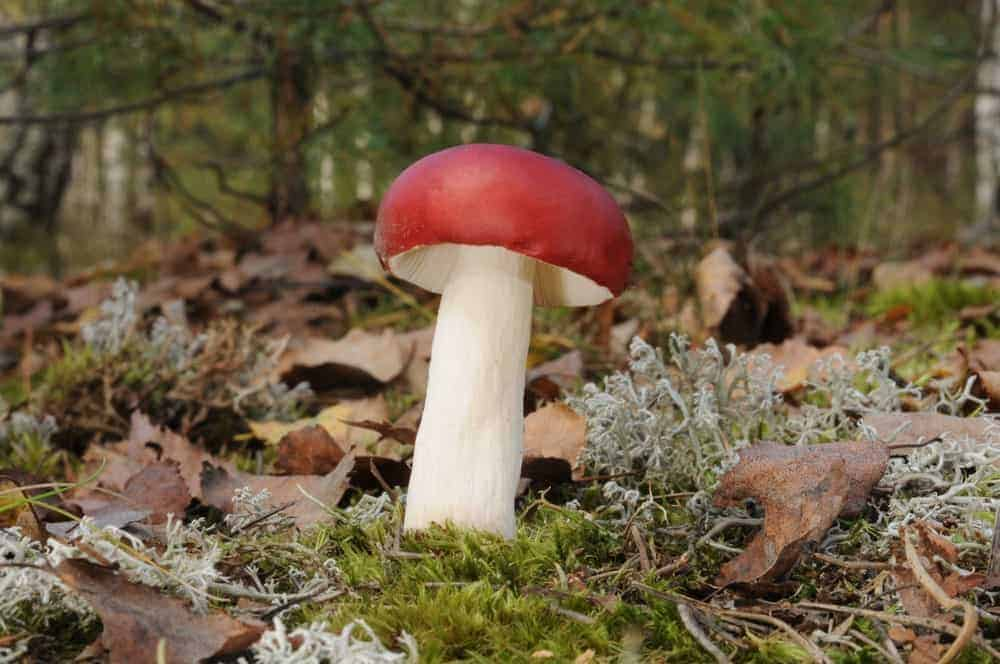

- Home

Russula Emetica
- White stemmed mushrooms with red caps, and a faint, fruity odor.
- Found mainly beneath conifers (pines and spruces in particular) and occasionally also on mossy (fairly wet) heathland.
- Also known as The Sickener. Poisonous when eaten raw or poorly cooked, and can cause nausea and vomiting, followed by severe stomach pains and diarrhea.

Toadstool Mushroom
- Spore-bearing, fruiting body typically in the form of a bright red and white-spotted, rounded cap on a white stem.
- Found near evergreen and deciduous trees in temperate and subarctic regions of the Northern Hemisphere.
- So-called because they look like the spot where toads would sit, toadstools are fungi widely believed to be inedible or toxic.